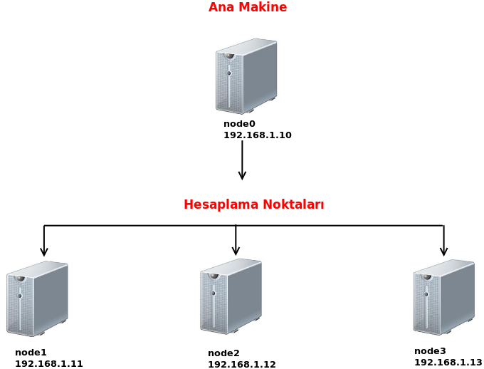

Yapmanız gereken büyük hesaplar varsa ve elinizdeki kaynaklar buna yeterli gelmiyorsa Beowulf Cluster yapısı tam da aradığınız şeydir. Başlangıç olarak, ihtiyacınızı karşılamak için bu kaynak size yetecektir.
Ev kullanıcıları büyük hesaplama gücüne ihtiyaç duyduğunda sahip oldukları işlemci gücü ya da RAM miktarı yetersiz gelecektir. Bu sorunları aşmak için 1994 senesinde Donald Becker ve Thomas Sterling tarafından Beowulf adını verdikleri çalışma başladı. Bu çalışmanın amacı düşük maliyetli ev bilgisayarları ile süper hesaplamalar yapabilecek kaynakları elde etmekti. Hazırladıkları ilk yapıda çoğumuzun adını dahi duymadığı Pentium I ve 486 sınıf üzerinde Linux olan makineler kullandılar. Bu çalışmalar sayesinde elimizde çok pahalı kaynaklar olmadan da büyük hesaplamalar yapabileceğimiz kanıtlanmış oldu. Bu çalışmaların tek dez avantajı ise hesaplama düğümlerinin birbirleri ile haberleşirken network üzerinde kaybettikleri zaman. Elimizde çok büyük kaynaklar yoksa ve bunları karşılayacak maddi bir desteğimiz de yoksa sanırım bu kayıp gözardı edilebilir. Daha detaylı bilgi almak isteyenler [1] adresine göz gezdirebilirler.
Anlatıma başlamadan önce biraz iştah kabartması için birkaç fotoğraf göstermek istiyorum :)


Elimde şu an için dört adet ev kullanıcı bilgisayarı bulunmakta. Bundan dolayı Beowulf yapısını bir adet
ana makine ve üç adet hesaplama düğümünden oluşturacağım. Ana makineden hesaplarımızı vereceğiz, aynı zamanda bu makine hesaplama düğümleri ile birlikte hesap işinede katkı sağlayacaktır. (İsterseniz, ilk çalışmanız için, fiziksel makinenizde sanal makineler oluşturup bu işlemleri adım adım yapabilirsiniz.)

Öncelikli olarak makinelerim için tanımlamalarım;
İş teslimi yapacağımız ana sunucumuz;
hostname ip
node0 192.168.1.10
Hesaplama düğümleri olarak adlandıracağımz makineler;
hostname ip
node1 192.168.1.11
node2 192.168.1.12
node 192.168.1.13
1) İlk iş olarak makinelerimizin birbirini “hostname”lerinden tanıması için hosts dosyalarımızı değiştirelim.
/etc/hosts dosyalarına aşağıdaki satırları ekleyelim. Bu dosya 4 makinede de aynı olacak. Burada dikkat edilmesi gereken ilk nokta, hostnamelerin doğru olması, ikincisi ise 127.0.0.1 kesinlikle sadece localhost olarak kalacak.
127.0.0.1 localhost
192.168.1.10 node0
192.168.1.11 node1
192.168.1.12 node2
192.168.1.13 node3
2) Hesaplamalarımızı yapmak için her makinede bir adet kullanıcı oluşturalım. Bu kullanıcıların adlarının
aynı olması karışıklığı önleyeceği gibi işimizi de kolaylaştıracaktır. Bunun için dört makinede;
sudo adduser mpiuser --uid 999
Bu kullanıcılara istediğin şifreyi verebilirsin. Karışıklığı önlemek adına hepsine aynı şifre verirseniz işiniz bir adım daha kolaylaşacaktır. Dikakt edilmesi gereken nokta ise her makinede oluşan kullanıcıların ID’lerinin aynı olması ve 1000’den düşük olması gerekliliği.
3) Hesaplarımızı mpiuser kullanıcısı üzeriden vereceğimiz için makinelerimiz bu kullanıcı üzerinden haberleşecek. Bunun için her makinedeki mpiuser kullanıcılarını şifresiz olarak ssh üzerinden haberleşmesini sağlayacağız. Öncelikle node0 üzerinde bu işlemleri yapalım.
mpiuser kullanıcı hesabına giriş yapalım. Burada dikkat etmemiz gereken şey; /root dizinine değil de /home/mpiuser dizinine düşmemiz gerektiği.
Şifresiz haberleşmeyi sağlamak için ssh anahtarı oluşturacağız. Bize şifre soracaktır, boş bırakabilirsiniz.
Şimdi oluşturduğumuz bu anahtarı hesap düğümleri makinelerimize gönderelim.
ssh-copy-id node1
ssh-copy-id node2
ssh-copy-id node3
Deneme yapamak için;
dediğimizde şifre istemeden node1 makinesine (192.168.1.11) ve mpiuser kullanıcısına eriştiysek sorun yok demektir.
Diğer nodelar için de bu işlemleri tekrarlayacağız.
node1 için;
su mpiuser
ssh-keygen -t rsa
oluşan anahtarı bu sefer node0, node2, node3’e göndereceğiz.
ssh-copy-id node0
ssh-copy-id node2
ssh-copy-id node3
node2 için;
su mpiuser
ssh-keygen -t rsa
oluşan anahtarı bu sefer node0, node1, node3’e göndereceğiz.
ssh-copy-id node0
ssh-copy-id node1
ssh-copy-id node3
node3 için;
su mpiuser
ssh-keygen -t rsa
oluşan anahtarı bu sefer node0, node1, node2’ye göndereceğiz.
ssh-copy-id node0
ssh-copy-id node1
ssh-copy-id node2
Bu şekilde artık bütün makinelerimiz şifresiz olarak mpiuser kullanıcıları üzerinde haberleşir duruma geldi.
4) Hesaplama yaparken her makinede hesaplama dosyalarının bulunması gerekmekte. Bunun için ben bir dizini hesaplama dosyalarımı koyacağım yer olarak seçiyorum ve bu dizinin diğer makineler ile aynı olmasını sağlamak için nfs dosya sistemini kullanacağım. Her makineye gerekli paketleri yükleyelim ve bir adet dizin oluşturup bu dizine mpiuser kullanıcısı sahibi yapalım. Bu komutları tüm makinelerde vereceğiz.
sudo apt-get install nfs-kernel-server
sudo mkdir /mirror
sudo chown mpiuser:mpiuser /mirror
Aynalama işlemi için ise /etc/exports dosyası içine aşağıdaki satırı ekleyelim.
/mirror *(rw,sync,no_subtree_check)
Artık her makinede servisi yeniden başlatıp aynalama işlemini başlatabiliriz.
sudo /etc/init.d/nfs-kernel-server restart
5) Eğer makinelerde güvenlik duvarınız çalışıyor durumda ise makinelerin birbirine sorun çıkartmaması için
gerekli kuralları verelim. Her makineye;
sudo ufw allow from 192.168.1.10/192.168.1.13
6) Şu dakikadan sonra elimizde birbiri ile şifresiz olarak haberleşen 4 adet makine bulunuyor. Ben bu dört
makineyi paralel hesaplama için kullanacağımdan dolayı makinelerime mpich2 kütüphanesini kuracağım. Her makinede;
sudo apt-get install mpich2 mpd
7) Son olarak geriye mpich2 için yapılandırma dosyalarımızı oluşturmak kaldı. Bunun için bu dosyaları node0 üzerinde oluşturup diğer makinelere gönderelim.
mpiuser@node0:~$ touch ~/mpd.hosts
mpiuser@node0:~$ touch ~/.mpd.conf
mpd.hosts dosyası içine her makinedeki çekirdek sayısı kadar hostname yazacağız. Örneğin benim ana makinem 4 çekirdekli ve hesaplama makinelerim iki çekirdekli ise mpd.hosts dosyamın içeriği;
node0
node0
node0
node0
node1
node1
node2
node2
node3
node3
.mpd.conf dosyamın dosya izninin 600 olaması gerekiyor ve bu dosya içine bir gizli kelime yazmamız gerekiyor.
mpiuser@node0:~$ chmod 600 ~/.mpd.conf
dosya içeriği ise;
secretword=KELİME_BURAYA_GELECEK
Artık ana makinede oluşturduğumuz bu dosyaları diğer makinelere gönderelim.
mpiuser@node0:~$scp -p .mpd.conf node1:/home/mpiuser/
mpiuser@node0:~$scp -p .mpd.conf node2:/home/mpiuser/
mpiuser@node0:~$scp -p .mpd.conf node3:/home/mpiuser/
mpiuser@node0:~$scp -p mpd.hosts node1:/home/mpiuser/
mpiuser@node0:~$scp -p mpd.hosts node2:/home/mpiuser/
mpiuser@node0:~$scp -p mpd.hosts node3:/home/mpiuser/
Bu noktadan sonrası yapacağınız hesaplamalar doğrultusunda değişmektedir. Bunun için [2] adresinde Paralel Programlama bölümü altındaki başlıkları incelemenizde fayda var.
Kaynak:
[1] http://yclept.ucdavis.edu/Beowulf/aboutbeowulf.html
[2] http://wiki.uhem.itu.edu.tr/wiki/Ana_Sayfa